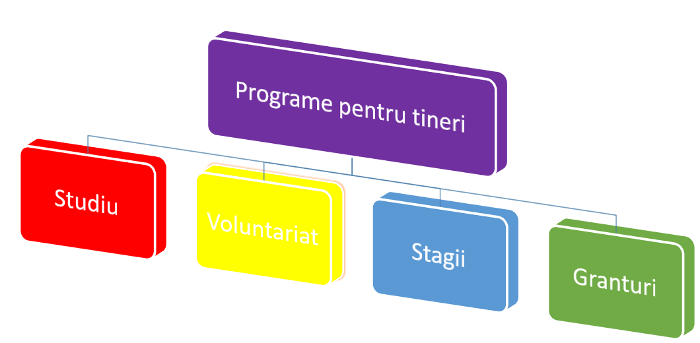

F I Ş A DE LUCRU NR. 11
- Porniţi aplicaţia pentru prezentări, deschideţi o nouă prezentare şi inseraţi în aceasta șase noi diapozitive.
- Primul diapozitiv va fi de tip titlu şi subtitlu şi va conţine titlul „Anul 2013 – Anul european al cetăţenilor” şi subtitlul „Numele si prenumele” elevului care realizează prezentarea
-
Al doilea diapozitiv va fi de tip necompletat și va cuprinde:
- caseta text drept titlu cu următorul conţinut: – „Priorităţi pentru anul 2013” va fi scris cu font Rockwell, culoare albastră, dimensiune 54;
-
3 forme(Shapes) sub forma de dreptunghiuri de culoare galbenă, linie de contur albastră de 3 pt și care vor avea adăugate următoarele texte:
- Oportunităţi pentru cetăţeni
- Participarea la viața UE
- Programe pentru tineri
-
Al treilea diapozitiv va fi de tipul titlu şi conţinut:
- titlu: Oportunităţi pentru cetăţeni
- un tabel ce conţine oportunităţile de studiu(minim 10) oferite de EURODESK, data ultimei actualizări şi termenul de înscriere.
- Diapozitivul patru va fi de tip necompletat şi va conţine o imagine potrivită cu titlul „Participarea la viața UE”. Imaginea va avea dimensiunile: înăţime 12 cm și lăţime 23cm. Aplicaţi un efect de animaţie de intrare de tip bare verticale (Random Bars) şi un efect de animaţie de ieşire de tip zbor afară spre dreapta(Fly out) acesteia. Durata fiecărei animaţii va fi de două secunde.
-
Al cincilea diapozitiv va fi de tip titlu şi conţinut și va cuprinde:
- Titlu: Programe pentru tineri
- Smart Art:

- Realizaţi setarea celor trei forme din diapozitivul 2 astfel încât acestea să fie butoane de navigare. Primul face trecerea către diapozitivul trei, al doilea către diapozitivul patru, iar cel de-al treilea către diapozitivul cinci.
- Pe diapozitivele 3, 4 și 5 inseraţi butoane de acţiune pentru a realiza întoarcerea la diapozitivul 2.
- In diapozitivul şase se vor scrie câteva concluzii în maxim 2 rânduri cu fontul Algerian, dimensiunea 28, culoarea maro și mesajul „Vă mulţumesc!” fontul Script MT Bold, dimensiunea 40, culoare galbenă
- Adăugaţi întregii prezentări ca temă(Theme) un şablon Circuit de culoare verde şi aplicaţi un efect de tranziţie de tip Origami spre stânga, automat la trei secunde întregii prezentări.
- Salvaţi fişierul cu numele Cetatenie europeana